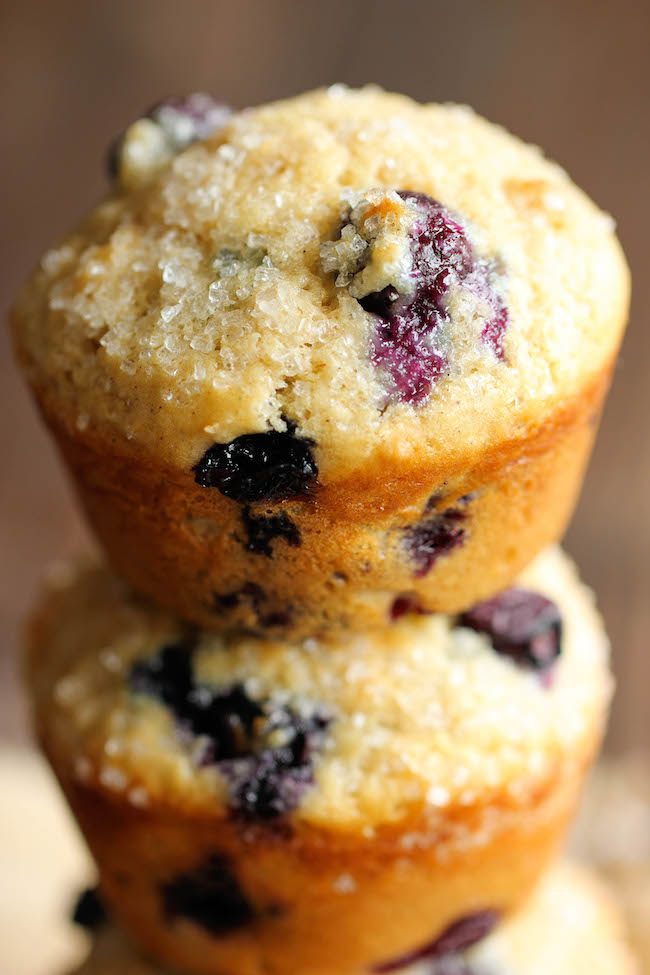

Blueberry Vanilla Muffins

Description
These light and airy muffins are the perfect way to start your mornings, loaded with plump, juicy blueberries and extra vanilla goodness!
Either way, just be prepared to have at least 3 of these muffins in a single serving – you won’t be able to stop at just one!
Ingredients
- 2 cups all-purpose flour
- 1 tablespoon baking powder
- 1/2 teaspoon cinnamon
- 1/2 teaspoon baking soda
- 1/4 teaspoon salt
- 1 1/2 cups buttermilk
- 2/3 cup sugar
- 1/4 cup unsalted butter, melted
- 1 large egg
- 1 tablespoon vanilla bean paste
- 1 cup blueberries
- 2 tablespoons sparkling sugar
Steps
- Preheat oven to 350 degrees F. Line a 12-cup standard muffin tin with paper liners or coat with nonstick spray; set aside.
- In a large bowl, combine flour, baking powder, cinnamon, baking soda and salt.
- In a large glass measuring cup or another bowl, whisk together buttermilk, sugar, butter and egg. Stir in vanilla bean paste. Pour mixture over dry ingredients and stir using a rubber spatula just until moist. Add blueberries and gently toss to combine.
- Scoop the batter evenly into the muffin tray. Sprinkle with sparkling sugar. Place into oven and bake for 15-17 minutes, or until a tester inserted in the center comes out clean.
- Remove from oven and cool on a wire rack.